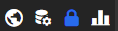

The header bar in Access Control Manager will normally show icons that can be clicked to access external applications such as Pinpoint Viewer, Data Manager and Audit Manager:

Links to External Applications
The external application icons are only present if their urls have been set up with the correct parameter in the acm.app.conf.json file located in the Access Control server's config directory:
Pinpoint Viewer icon/link:
"ppClient": "http://[servername]:[port]/ppclient/#/"
Data Manager icon/link
"dmgrClient": "http://[servername]:[port]/dmgrclient/#/"
Audit Manager icon/link
"amClient": "http://[servername]:[port]/amclient/#/"
The list of external applications on the Welcome Page will also change in accordance with the urls configured in acm.app.conf.json.
After saving changes in the file you will only need to refresh the browser to see the changes in the header bar and in the Welcom Page content.